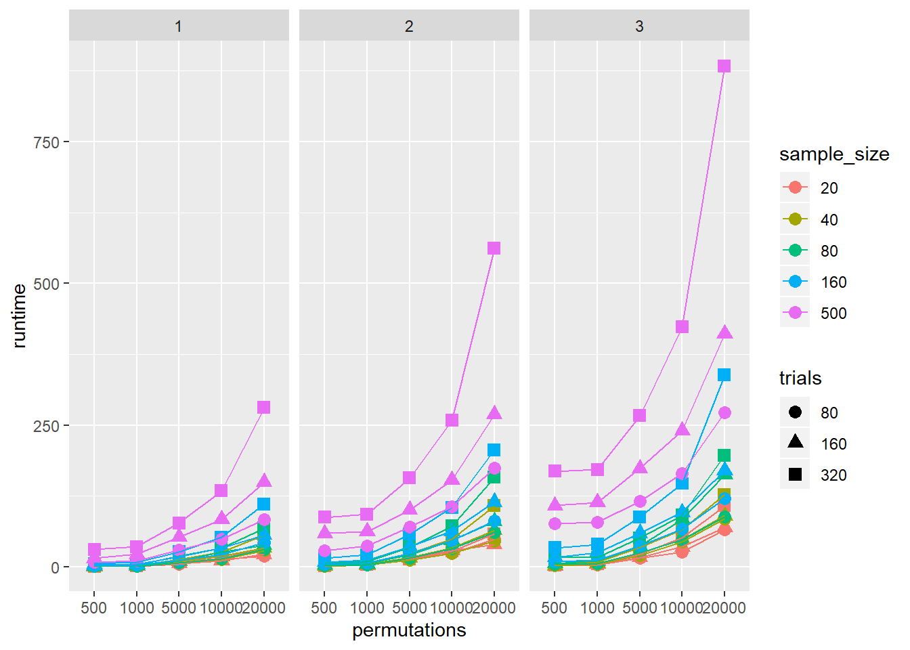

5 Important considerations
5.1 how many permutations?
To examine how many random splits are required to provide a precise estimate, a short simulation was performed including 20 estimates of the spearman-brown reliability estimate, for each of 1, 10, 50, 100, 1000, 2000, 5000, 10000, and 20000 random splits. This simulation was performed on data from one block of ~ 80 trials. Based on this simulation, I recommend 5000 (or more) random splits be used to calculate split-half reliability. 5000 permutations yielded a standard deviation of .002 and a total range of .008, indicating that the reliability estimates are stable to two decimal places with this number of random splits. Increasing the number of splits improved precision, however 20000 splits were required to reduce the standard deviation to .001.
So, 5000 is good. More is better, but will not yield greatly improved estimates.
5.2 how fast is splithalf?
The quick answer is, it depends. The biggest factor will be your machine speed. For relative times, I ran a simulation with a range of sample sizes, numbers of conditions, numbers of trials, and permutations. I’ll analyse this properly at a later date, but hopefully this visualisation is a useful demonstration of the relative processing times.
speed <- read.csv("speedtestdata.csv")
speed <- speed %>%
rename(Sim = X,
sample_size = V1,
Number_conditions = V2,
trials = V3,
permutations = V4,
runtime = V5)
speed2 <- speed
speed2$sample_size <- as.factor(speed2$sample_size)
speed2$Number_conditions <- as.factor(speed2$Number_conditions)
speed2$trials <- as.factor(speed2$trials)
speed2$permutations <- as.factor(speed2$permutations)
ggplot(data = speed2,
aes(x = permutations, y = runtime, colour = sample_size, shape = trials, group = interaction(trials, sample_size))) +
geom_point(size = 3) +
geom_line() +
facet_grid(. ~ Number_conditions)